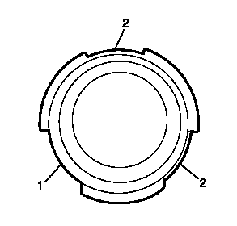
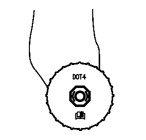

总泵储液罐的加注
- 1.通过制动总泵储液罐目视检查制动液液位。
- 2.如果在常规油液检查时发现制动液液位处于或低于半满位置，则应检查制动系统有无磨损和可能的制动液泄漏。
- 3.如果在常规油液检查时发现制动液液位处于或低于半满位置，且制动系统检查未发现磨损或制动液泄漏，则可以将制动液加注至最满标记。
- 4.如果刚完成制动系统维修，则可将制动液加注至最满标记。
- 5.如果制动液液位高于半满位置，则在正常状况下不建议添加制动液。
- 6.如果要向总泵储液罐中添加制动液，则应在拆下储液罐盖和膜片前，清洁储液罐上及盖周围的外侧表面。有关建议的制动液，请参见粘合剂、油液、润滑剂和密封胶。
-

7.添加完制动液，将储液罐盖子以正确的方向放在罐口，大卡爪对正储液罐大槽 (1)，小卡爪对正储液罐小槽 (2)，安装盖子。
-

8.旋盖可以旋入，旋盖上的字处于正确的位置。